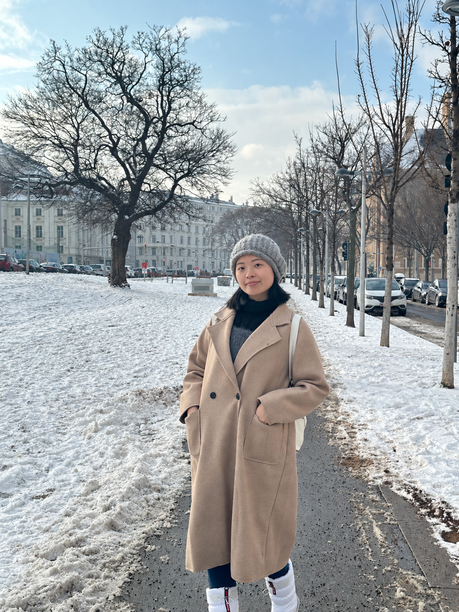

Computational social neuroscience
Designing behavioral and neuroimaging studies to examine mental alignment during shared experiences.

I am an M.S. student in Social Psychology at NTU. My work brings together behavioral experiments and computational approaches to social interaction.
Designing behavioral and neuroimaging studies to examine mental alignment during shared experiences.
Using behavioral studies to examine how social interactions shape alignment.
Exploring human–LLM alignment in the context of social interaction.
Association for Psychological Science Annual Convention · Barcelona, Spain
Oral presentation, Taiwanese Psychological Association Annual Conference · Tainan, Taiwan
Symposium presentation, Taiwanese Psychological Association Annual Conference · Taipei, Taiwan
Social & Affective Neuroscience Society Annual Conference · Toronto, Canada
NTU Neurobiology and Cognitive Science Center Summer Internship Conference · Taipei, Taiwan